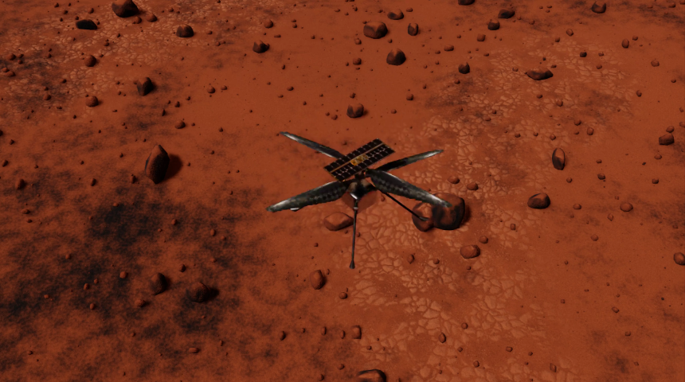

Environments
This section provides an overview of the environments currently available in the spaceros_procgen_envs package.
Before using these environments, ensure that you meet the system requirements and have successfully installed the demo, as outlined in the installation guide. Once installation is complete, refer to the usage instructions to learn how to run the environments.
Demos
Perseverance

spaceros_procgen_envs/run.sh ros2 run spaceros_procgen_envs teleop.py --demo perseverance
Ingenuity

spaceros_procgen_envs/run.sh ros2 run spaceros_procgen_envs teleop.py --demo ingenuity
Gateway
spaceros_procgen_envs/run.sh ros2 run spaceros_procgen_envs teleop.py --demo gateway
Tasks
A set of environments that come with an objective for the robot to complete. Each environment instance provides a reward signal that agents must learn to maximize.
Sample Collection (Moon/Mars)
Moon

spaceros_procgen_envs/run.sh -e SPACEROS_DEMO_SCENARIO=moon -e SPACEROS_DEMO_SCENARIO=procedural ros2 run spaceros_procgen_envs teleop.py --demo sample_collection
Mars

spaceros_procgen_envs/run.sh -e SPACEROS_DEMO_SCENARIO=mars -e SPACEROS_DEMO_SCENARIO=dataset ros2 run spaceros_procgen_envs teleop.py --demo sample_collection
Peg-in-Hole (Moon/Mars/Orbit)

spaceros_procgen_envs/run.sh ros2 run spaceros_procgen_envs teleop.py --demo peg_in_hole
Debris Capture (Orbit)

spaceros_procgen_envs/run.sh -e SPACEROS_DEMO_SCENARIO=dataset ros2 run spaceros_procgen_envs teleop.py --demo debris_capture
Note: All environments have two variants (e.g. perseverance and perseverance_visual) that differ in the enabled sensors. The *_visual variant includes camera sensors that provide visual observations at the cost of increased computational requirements.